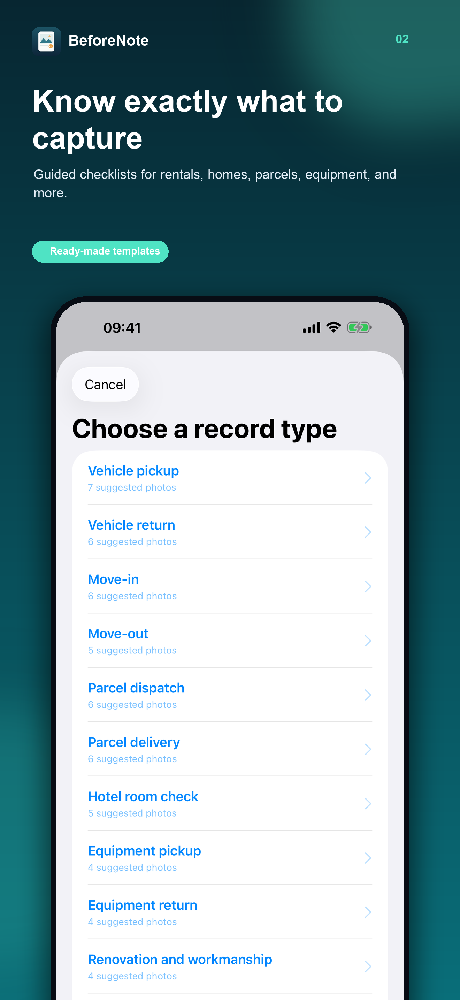

RENTAL CAR PICKUP
Take these photos before you drive away.
A quick, consistent record helps you remember the car's condition at pickup. Take the photos while you can still inspect the vehicle and report concerns to the rental company.
Pickup photo checklist
- All four sides of the car, with enough distance to see each panel.
- Close-ups of existing scratches, dents or chipped paint.
- Wheels, tyres and rims, including any visible damage.
- Windscreen, windows, lights and mirrors.
- Seats, dashboard, boot and other interior areas.
- Fuel level and mileage, if relevant to your rental agreement.
- The parking spot and surrounding area, when useful.
Compare what you see with the rental company's condition report. Tell staff about discrepancies before departure and follow the terms of your agreement.
BeforeNote is a one-time purchase for iPhone. No account or subscription.

Keep everything together
BeforeNote's vehicle pickup guide groups suggested photos with your notes. When you finish, the record becomes read-only in the app and you can create an offline PDF to save or share.
The app stores photos and notes locally. Its file-integrity check is not notarisation, a verified timestamp or a legal guarantee. Keep copies of important records and follow your rental agreement.
Ready for pickup?
Capture the condition while the details are still in front of you.
Get BeforeNote for iPhone